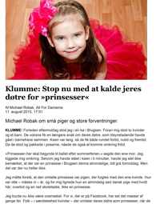

Dansk
Prøve med adgang til internettet
Du skal vælge en af disse opgaver:
1 Digital mobning
2 Strandet mellem Svendborg og Ærø
3 Prins eller prinsesse?
4 Humor
Du skal skrive den valgte opgaves nummer og titel på din besvarelse.
1 Digital mobning
2 Strandet mellem Svendborg og Ærø
3 Prins eller prinsesse?
4 Humor
Du skal skrive den valgte opgaves nummer og titel på din besvarelse.
Før du skriver
Til eleven
Til denne prøve i skriftlig fremstilling har du adgang til internettet.
Du må ikke kommunikere eller dele dine dokumenter med andre under prøven.
Nogle af opgaverne kræver, at du skal søge informationer på internettet til brug for din besvarelse. I andre opgaver er det en åben mulighed, hvor du kan søge fakta og inspiration.
Layoutet af din besvarelse indgår i vurderingen. Tænk derfor på, at du udover tekst kan inddrage fx billeder og andre grafiske virkemidler.
Hvis du i din besvarelse anvender informationer, citater, billeder eller andre grafiske virkemidler hentet fra internettet, skal du til sidst i besvarelsen angive de væsentlige kilder.
Din besvarelse vurderes på både indhold, sprog og form. Se vurderingskriterierne nedenfor.
God arbejdslyst!
Vurderingskriterier til eleven
Din skriftlige besvarelse bliver vurderet ud fra en helhedsvurdering af 3 dimensioner: indhold, sprog og form.
Der gives én karakter.
| Vurderingens 3 dimensioner | Vurderingskriterier | Forklaring |
| Tekstens indhold | Opgavens krav | I hvor høj grad opfylder din besvarelse opgavens krav til genre, teksttyper og indhold? |
| Genrebevidsthed | I hvor høj grad viser din besvarelse sikkerhed i skrivegenrens krav til teksttyper, indhold, sprog og form? | |
| Fylde og disponering | I hvor høj grad er din besvarelse fyldestgørende og hensigtsmæssigt disponeret? | |
| Søgning og brug af internettet | Hvis der i opgaven er stillet krav om, at du skal anvende internettet til at søge inspiration eller information, eller det i øvrigt er relevant, vurderes det, hvordan – og i hvor høj grad du kritisk har bearbejdet og anvendt dette i besvarelsen.
Desuden vurderes det, om de væsentligste kilder fremgår af besvarelsen. |
|
| Tekstens sprog | Sprog | I hvor høj grad er sproget i din besvarelse forståeligt, klart og varieret i både ordforråd og syntaks? |
| Retskrivning og tegnsætning | I hvor høj grad har du i din besvarelse anvendt korrekt stavning, og er din tegnsætning sikker? | |
| Tekstens form | Orden og layout | I hvor høj grad er din besvarelse layoutet i forhold til den genre, du skriver i, og har du udnyttet de layoutmæssige muligheder? |
1 Digital mobning
Center for Rummelighed har produceret en film, hvor de har bedt 12 gæster læse autentiske mobbebeskeder op. Gæsteoplæserne har ikke set beskederne før, og deres reaktioner er tankevækkende.
|
Se filmen som inspiration, og skriv et essay om digital mobning.
I dit essay skal du blandt andet:
|
Kilde: Center for Rummelighed
2 Strandet mellem Svendborg og Ærø
Den 27. november 2011 går færgen ”Ærøskøbing” på grund i farvandet mellem Svendborg og Ærø. Om bord er blandt andet en mindre gruppe efterskoleelever på vej til deres skole. Forestil dig, at du er en af disse elever.
Du vælger at skrive indlæg til skolens blog, mens færgen er grundstødt.
|
Skriv tre-fire indlæg til din skoles blog om dine oplevelser og tanker om bord på den strandede færge.
Du skal blandt andet:
|
Kilde: fyens.dk
3 Prins eller prinsesse?
Det sker hver dag, at voksne deler opslag på de sociale medier, poster billeder af deres børn og betegner dem som prinser eller prinsesser. Det handler om den første tand, de nye fodboldstøvler, at de skal til dans eller har fået 12 i matematik til en prøve.
I klummen Stop nu med at kalde jeres døtre for prinsesser skriver Michael Robak om denne tendens.
Klik på ikonet herunder for at læse pdf-udgaven af klummen.
|  |
|
Skriv en kommentar til Michael Robaks klumme.
I din kommentar skal du:
|
4 Humor
Kilde: Kbh-murerlaug.dk
Humor kan give smil på læben, skabe debat, men også give anledning til misforståelser – og dermed konflikter.
Filmen #BLIVMURER er et eksempel på, at man anvender humor som et væsentligt virkemiddel.
Skriv en baggrundsartikel om dansk humor.
|